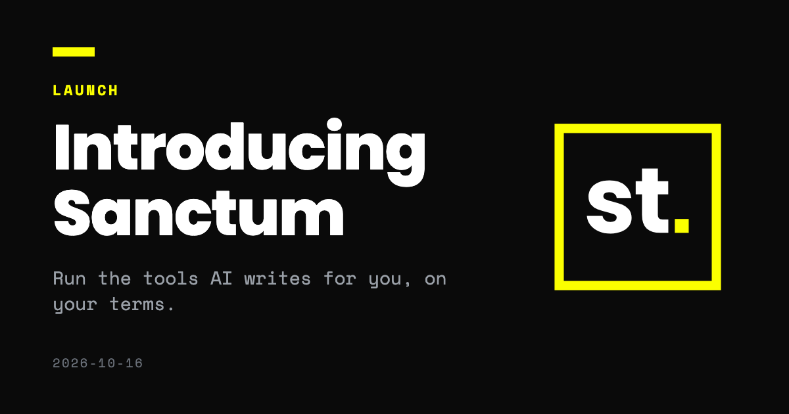

October 16, 2026
Introducing Sanctum: run the tools AI writes for you, on your terms

Asking a model for a small tool has become ordinary. You describe what you want, and a minute later you have a single HTML file that does it. That is useful. It also means a lot of people are opening code they did not write and did not read.
Why we built it
It started with a request from a company. They needed to generate cryptographic keys, and they needed a tool they could trust. That meant three things. They could read the source. They could still use it five years from now, offline, without us. And they could check who it came from.
The tool itself was easy to build, because it is one HTML page. The hard part was everything around it. We could host it, but nobody could promise that the site would still be up in five years, or that nobody would break into it in the meantime. They could download the file, but then a file on a disk has no trust anchor. Nothing says who made it or whether it changed.
We had also been building small tools for small cryptographic tasks, and we wanted to hand people something they could download once and rely on for good. Websites go away. A signed file you keep does not.
The problem
The file is usually a few hundred lines of HTML and JavaScript. Almost nobody reads all of it, and one of those lines could be a fetch to a host you have never heard of. Open it in a browser tab and it runs at once, with normal web permissions. Every request goes out, and you find out what the tool contacted afterwards, if you find out at all.
A virtual machine isolates the file, but it does not tell you what the file tried to reach, and setting one up for a calculator costs more than the calculator saved you.
Today we are launching Sanctum to change that.
What Sanctum does
Sanctum is a desktop app for running single-file HTML tools. When you add one, it:
- stores a copy under its SHA-256 hash, runs only that copy, and checks the hash again on every launch;
- scans the source and lists what the tool uses: the camera, storage, smart cards and every hostname it names;
- asks you to approve each capability, with network access approved one host at a time;
- opens the tool at its own origin, under a Content Security Policy built from your approvals, with the app's own bridge removed.
Anything you did not approve stays blocked, including things the scan missed. The scan only fills in the approval screen. The sandbox is what enforces your choices, and it does that whether or not the scan caught anything.
There is no account and no telemetry. Sanctum is open source under AGPL-3.0 and free for individuals.
Signed tools
A sandbox helps most when you also know who made the thing inside it. Sanctum now has a Catalogue: a list of tools that their publishers have signed.
Enigma publishes the first two. Shamir splits a secret into shares and puts it back together from any chosen number of them. OTP Vault keeps one-time codes in Sanctum's storage, and optionally on a YubiKey. Open the Catalogue tab, or click Install in Sanctum on a tool's page on the website, and Sanctum shows you the tool, who published it and what it asks for. Nothing is installed until you click.
Two rules apply to all of it. A signature tells you who published a tool and that the file has not changed since. It does not tell you the tool is safe. And a signature never grants access: an installed tool starts with nothing approved, exactly like one you pasted in.
Who it is for
Sanctum is for the CTOs and CISOs who need a specific tool and have to know it will keep doing the same thing. Models now write these tools, but they usually come as links or hosted services. A tool you have installed as a signed bundle is different. It is a fixed file. It behaves the same on day one and on day one thousand, and it runs on your own desktop and network, where confidential data has nowhere to go that you did not approve.
What you can check
We would rather offer a short list of guarantees that always hold than a long list that depends on a scanner being right. The scanner can be fooled, so it is not the security control. The origin, the policy and the hash check are, and they apply to every tool the same way.
You should not have to take our word for any of it.
- It works offline. Installed tools run with no network at all unless you approved a host. Sanctum does not phone home, and a network inspector will show you it does not.
- A swapped tool is rejected. The catalogue is signed, and so is each tool. A tampered bundle, or a tool served by someone who took over the download site, fails the check and does not install.
- You can read all of it. Sanctum and the registry format are open source, so anyone can audit what we describe here.
What comes next
Sanctum only contacts a registry when you ask it to. We are working on update notices and a faster way to withdraw a tool that turns out to be bad. For organizations, we are building signed policy, fleet deployment and audit logs with a first group of design partners. If that is you, write to ultra@enigma.sh.
Try it
Download Sanctum for macOS, Windows or Linux from the releases page, choose Browse signed tools on the first screen, and install Shamir. Then tell us how it went. Open an issue on GitHub or write to ultra@enigma.sh.